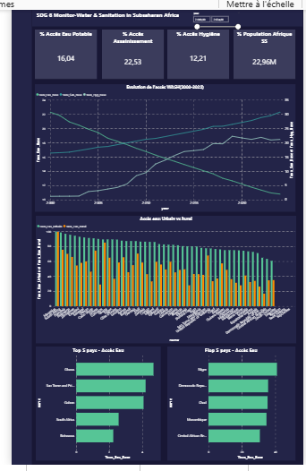
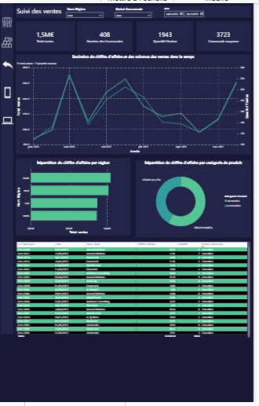
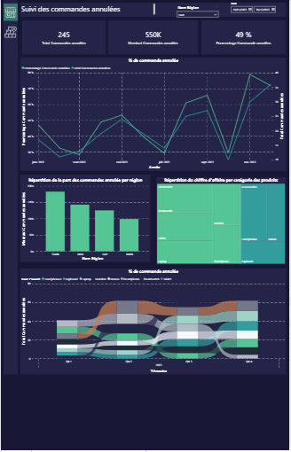

Transforming complex water & sanitation data into actionable insights. Bridging hydraulic engineering expertise with modern data analytics — Power BI, Python, SQL — to drive impact across Africa.
Transformer les données eau & assainissement en insights actionnables. À la croisée de l'ingénierie hydraulique et de l'analyse de données — Power BI, Python, SQL — pour un impact concret en Afrique.
A rare combination of water engineering domain expertise and modern data analytics capabilities.
Une combinaison rare d'expertise en ingénierie hydraulique et de compétences en data analytics.
End-to-end dashboards with star schema modeling, DAX measures, and interactive storytelling.
Dashboards complets avec modèle en étoile, mesures DAX et storytelling interactif.
Data pipelines, predictive modeling, and ML deployment for real-world engineering problems.
Pipelines de données, modélisation prédictive et déploiement ML pour des problèmes d'ingénierie réels.
Advanced SQL for automated reporting, stored procedures, and complex analytical queries.
SQL avancé pour rapports automatisés, procédures stockées et requêtes analytiques complexes.
Water network modeling, field data collection, and infrastructure planning for WASH projects.
Modélisation de réseaux d'eau, collecte de données terrain et planification WASH.
Real projects combining water sector domain knowledge with data analytics expertise.
Des projets réels combinant expertise du secteur eau et compétences en data analytics.

4-page interactive dashboard tracking water, sanitation and hygiene access across Sub-Saharan Africa using official WHO/UNICEF data.
Dashboard interactif de 4 pages sur l'accès eau, assainissement et hygiène en Afrique subsaharienne — données officielles JMP 2025.
ML pipeline predicting water network failures from IoT sensor data — pressure, flow, turbidity, pH — deployed on Streamlit.
Pipeline ML prédisant les pannes de réseau d'eau à partir de données capteurs IoT — pression, débit, turbidité, pH — déployé sur Streamlit.


Complete MySQL system automating sales reporting — from relational modeling to stored procedures and advanced analytics.
Système MySQL complet automatisant les rapports de vente — de la modélisation relationnelle aux procédures stockées et analyses avancées.
ML-based sales forecasting comparing Linear Regression, Random Forest, and Gradient Boosting — R²=0.74 on 1,000+ transactions.
Prévision des ventes par ML comparant Régression Linéaire, Random Forest et Gradient Boosting — R²=0.74 sur 1 000+ transactions.
Field experience meets data analytics — a unique profile for water sector development.
Expérience terrain et data analytics — un profil unique pour le développement du secteur eau.
Water network analysis and distribution modeling using EPANET. Field data collection (pressure, flow), GIS mapping, and technical reporting for infrastructure stakeholders.
Analyse de réseaux d'eau et modélisation hydraulique avec EPANET. Collecte de données terrain, cartographie SIG et rapports techniques.
Assessment of water access and sanitation infrastructure aligned with SDG 6 objectives. Field surveys and data summaries for local water authorities.
Évaluation de l'accès à l'eau et des infrastructures d'assainissement alignées sur l'ODD 6. Enquêtes terrain et synthèses pour les autorités locales.
Power BI dashboards, SQL automation, and Python analytics for international clients across sales, HR, and water sector domains.
Dashboards Power BI, automatisation SQL et analytique Python pour clients internationaux dans les domaines ventes, RH et eau.
ENSP Maroua · 2020 – 2025
Water distribution networks, hydraulic modeling, GIS, environmental engineering. Final project: design of a water supply system for a peri-urban area.
Réseaux de distribution d'eau, modélisation hydraulique, SIG, génie environnemental. Projet final : conception d'un système d'alimentation en eau en zone périurbaine.
IoT + AI startup for real-time water loss detection in African urban networks. LoRaWAN pressure/flow/acoustic sensors, FastAPI backend, SaaS model — 24-month technical roadmap targeting African utility companies.
Startup IoT + IA pour la détection en temps réel des pertes d'eau dans les réseaux urbains africains. Capteurs LoRaWAN, backend FastAPI, modèle SaaS — feuille de route technique de 24 mois ciblant les sociétés d'eau africaines.
Open to remote data analyst roles, consulting missions, and development institution opportunities across the EMEA region.
Ouvert aux postes remote de data analyst, missions de conseil et opportunités dans les institutions de développement en région EMEA.
📍 Cameroon · Remote-ready · EMEA time zones
📍 Cameroun · Remote · Fuseaux EMEA